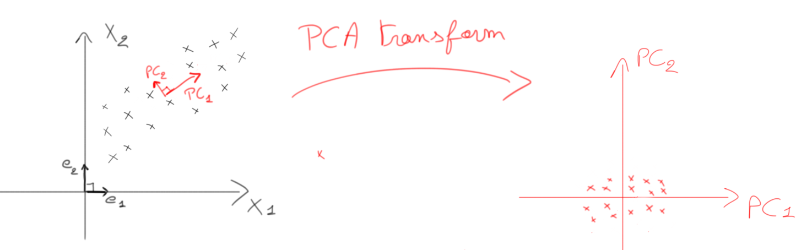
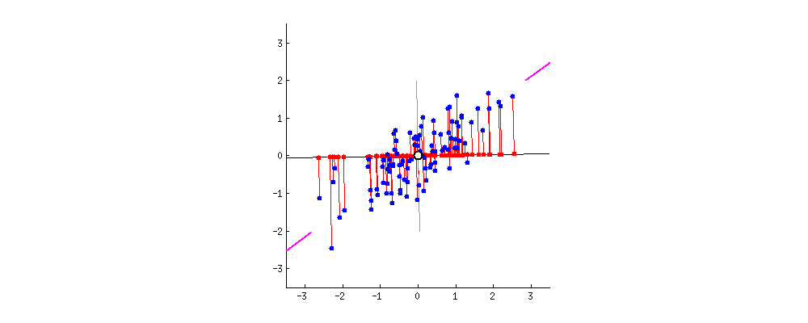
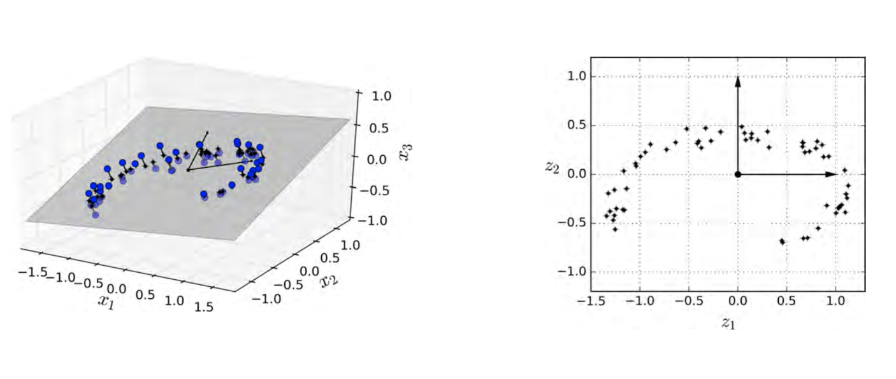
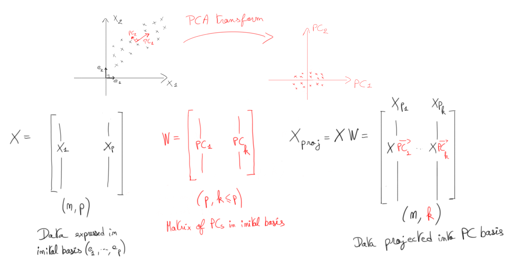
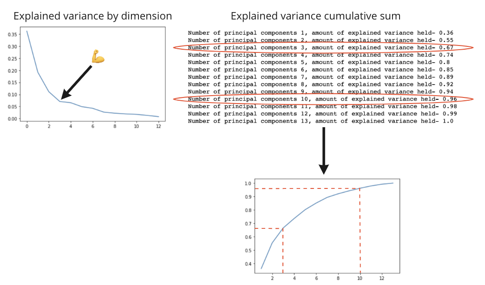
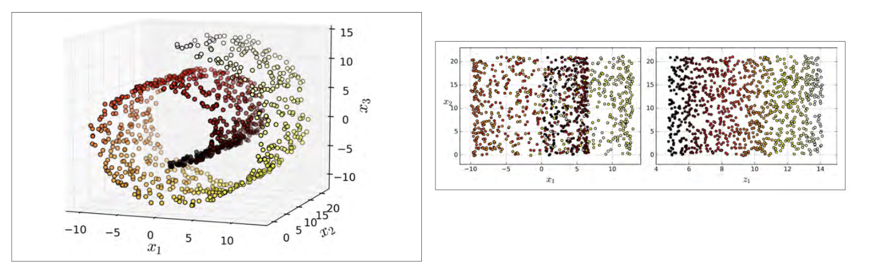
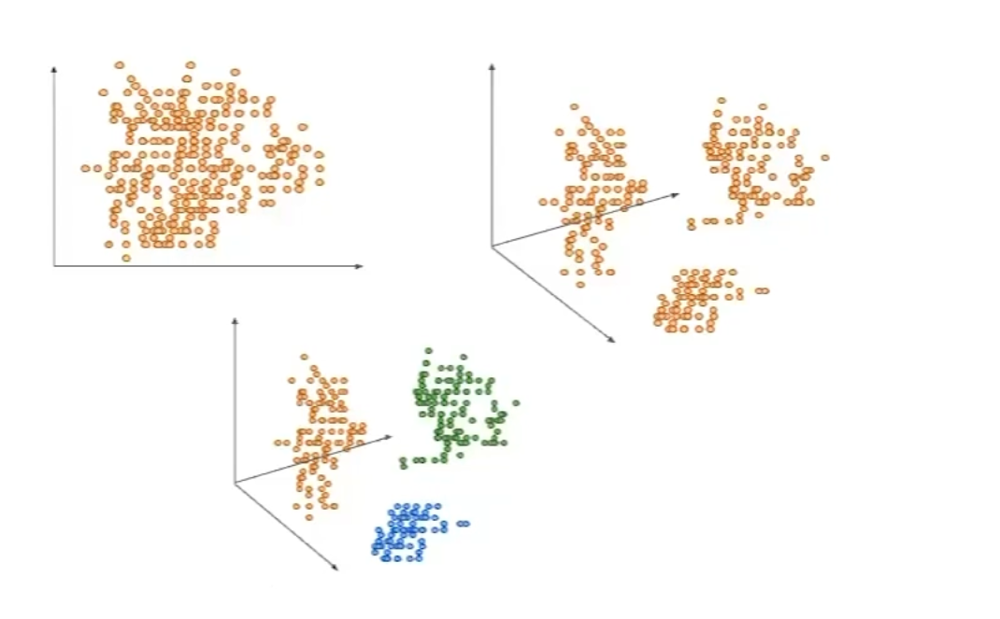
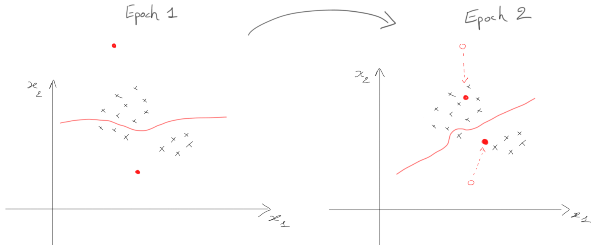
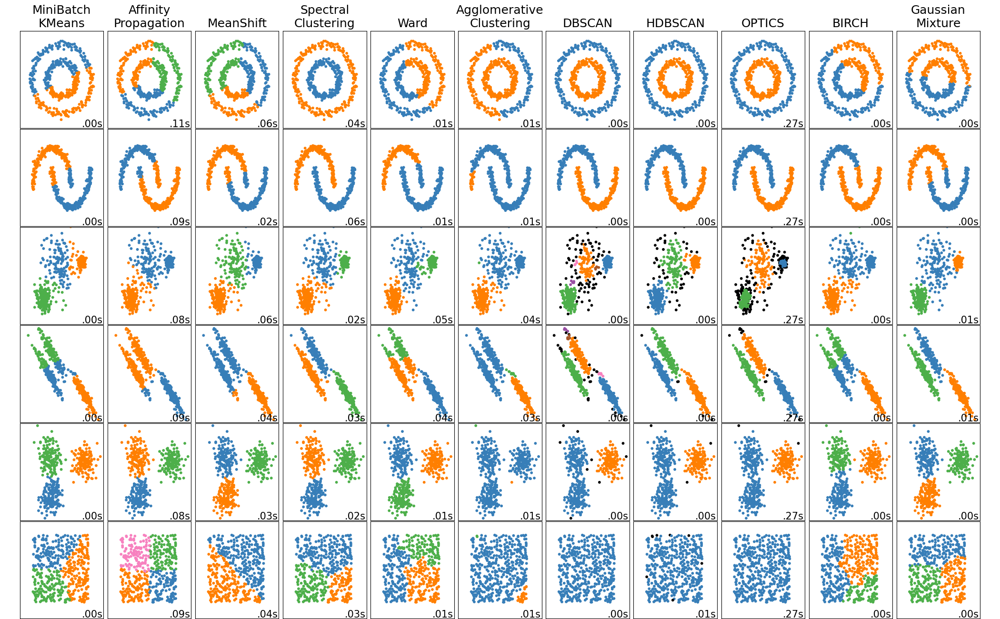

Unsupervised Learning
Comprendre les algorithmes d'apprentissage non supervisé — réduction de dimensionnalité avec PCA et clustering avec K-Means — pour trouver des patterns dans des données sans labels.
📋 Cheatsheet — Unsupervised Learning
PCA (Principal Component Analysis)
from sklearn.preprocessing import StandardScaler
from sklearn.decomposition import PCA
## ⚠️ Toujours scaler AVANT PCA
scaler = StandardScaler() # instancie le scaler
X_scaled = scaler.fit_transform(X) # centre et réduit les features
## PCA complet (toutes les composantes)
pca = PCA() # instancie PCA (garde toutes les PCs)
pca.fit(X_scaled) # calcule les composantes principales
## Projection dans le nouvel espace
X_proj = pca.transform(X_scaled) # projette X sur les PCs → shape (n, p)
## Accéder aux composantes principales
pca.components_ # matrice W des PCs → shape (p, p)
pca.explained_variance_ratio_ # % de variance expliquée par chaque PC
## PCA avec réduction de dimension (garder k composantes)
pca_k = PCA(n_components=3) # ne garde que 3 PCs
X_reduced = pca_k.fit_transform(X_scaled) # fit + transform en une ligne → shape (n, 3)
## Reconstruction (décompression)
X_reconstructed = pca_k.inverse_transform(X_reduced) # retourne dans l'espace original (approximé)
## Variance cumulée (pour choisir k)
import numpy as np
np.cumsum(pca.explained_variance_ratio_) # variance cumulée : [0.36, 0.55, 0.67, ...]K-Means Clustering
from sklearn.cluster import KMeans
## Fit K-Means
km = KMeans(n_clusters=3) # instancie avec K=3 clusters
km.fit(X) # entraîne sur les données
## Résultats
km.labels_ # labels assignés à chaque point → array de int
km.cluster_centers_ # coordonnées des centroïdes → shape (K, p)
km.inertia_ # inertie (WCSS) = somme des distances² intra-cluster
## Prédiction sur de nouvelles données
km.predict(new_X) # assigne le cluster le plus proche
## Elbow method : choisir K optimal
inertias = []
for k in range(1, 10):
km_test = KMeans(n_clusters=k).fit(X) # fit pour chaque K
inertias.append(km_test.inertia_) # stocke l'inertie## Output : inertias
## [2500.3, 1200.1, 800.5, 750.2, 720.1, ...] → chercher le "coude"⚠️ Récapitulatif — Erreurs clés à éviter
❌ Ne pas scaler les données avant PCA
PCA est basé sur la variance : si les features ne sont pas centrées-réduites, celles avec de grandes échelles dominent les composantes.
❌
pca.fit(X)directement sur les données brutes
✅
X_scaled = StandardScaler().fit_transform(X)puispca.fit(X_scaled)
❌ Confondre le nombre de PCs avec le nombre de features à garder
PCA calcule autant de PCs que de features originales. La réduction de dimension vient du choix de garder seulement
kPCs.
❌ Croire que
PCA()réduit automatiquement les dimensions
✅ Utiliser
PCA(n_components=k)aveckchoisi via la méthode du coude
❌ Oublier que les labels K-Means sont arbitraires
K-Means assigne des labels numériques (0, 1, 2…) qui ne correspondent pas forcément aux vrais labels si on en a.
❌
accuracy_score(y, km.labels_)directement
✅ Mapper manuellement les labels K-Means vers les vrais labels avant de comparer
Choisir K au hasard sans méthode
Le nombre de clusters est un hyperparamètre critique. Un mauvais K donne des groupes non pertinents.
❌
KMeans(n_clusters=5)sans justification
✅ Tracer l'inertie pour différents K et utiliser la méthode du coude (elbow method)
❌Appliquer K-Means sur des données de très haute dimension
Les distances euclidiennes perdent leur sens en haute dimension (curse of dimensionality). K-Means fonctionne moins bien.
❌
KMeans().fit(X)sur 100+ features brutes
✅ Appliquer PCA d'abord pour réduire les dimensions, puis K-Means sur les PCs
1) Vue d'ensemble — Supervised vs Unsupervised

1.1 Supervised Learning (rappel)
En apprentissage supervisé, on dispose d'un dataset (X, y) où X est la matrice de features de shape (n, p) et y le vecteur de targets de shape (n, 1). L'objectif est de trouver une fonction h(X) aussi proche de y que possible.
1.2 Unsupervised Learning
En apprentissage non supervisé, on cherche des patterns dans X sans supervision d'un target y. Deux grandes familles :
Réduction de dimensionnalité — Feature engineering (moins de features → moins de temps de calcul), compression (moins d'espace), meilleure visualisation
Clustering — Grouper les données par similarité : exploration, détection d'anomalies, recommandations, classification semi-supervisée
2) Principal Component Analysis (PCA)
PCA projette un dataset haute dimension dans un espace de dimension inférieure, en trouvant les meilleures combinaisons linéaires de features qui captent le maximum de variance.
2.1 Rappel — Combinaisons linéaires en régression
En régression linéaire, on utilise déjà des combinaisons de features :
$\hat{y} = \beta_0 + \beta_1 X_1 + \beta_2 (X_2 + X_3)$
PCA pousse ce principe plus loin en créant de nouvelles variables (les Principal Components) :
$Z_1 = a_{11}X_1 + a_{12}X_2 + a_{13}X_3$
$Z_2 = a_{21}X_1 + a_{22}X_2 + a_{23}X_3$
Chaque $Z_i$ est une composante principale (PC) qui :
- annule toute multicolinéarité (les PCs sont orthogonales entre elles)
- est classée par pouvoir explicatif décroissant (mesurée par la variance)

2.2 Intuition géométrique
Si on ne garde qu'une seule direction pour décrire nos données, elle doit :
- préserver le maximum de variance (dispersion des données projetées)
- minimiser les erreurs de reconstruction (distances entre points et leur projection)
👉 Explication visuelle sur StackExchange

👉 Visualisation interactive de PCA
PCA permet de réduire les dimensions tout en gardant l'essentiel de l'information :
$(X_1, X_2, X_3) \sim (Z_1, Z_2)$

2.3 Exemple codé — Dataset Wine
from sklearn.datasets import load_wine
from sklearn.preprocessing import StandardScaler
import pandas as pd
wine = load_wine(as_frame=True) # charge le dataset wine
X = wine.data # features (178 vins, 13 features)
y = wine.target # labels (3 classes de vin)
wine_features = X.columns # noms des colonnes
## ⚠️ Toujours centrer-réduire avant PCA
scaler = StandardScaler()
X = pd.DataFrame(scaler.fit_transform(X), columns=wine_features)Avant PCA, on observe de la multicolinéarité dans la heatmap de corrélation :
sns.heatmap(pd.DataFrame(X).corr(), cmap='coolwarm') # corrélations entre featuresa) Calculer les composantes principales
from sklearn.decomposition import PCA
pca = PCA() # instancie PCA (garde toutes les PCs)
pca.fit(X) # calcule les 13 PCs
## Accéder aux PCs (chaque PC = combinaison linéaire des features)
W = pca.components_ # shape (13, 13)
W = pd.DataFrame(W.T,
index=wine_features,
columns=[f'PC{i}' for i in range(1, 14)])Chaque PC est une combinaison linéaire des features originales du vin.
b) Projeter les données dans le nouvel espace
X_proj = pca.transform(X) # projette les 178 vins sur les 13 PCs
X_proj = pd.DataFrame(X_proj, columns=[f'PC{i}' for i in range(1, 14)])Résultat : 178 vins exprimés dans l'espace des 13 composantes principales — avec zéro multicolinéarité :
sns.heatmap(X_proj.corr(), cmap='coolwarm') # → heatmap diagonale parfaiteLa projection dans l'espace PCA est une simple multiplication matricielle : X_proj = X @ W
## Preuve computationnelle
W = pca.components_.T # matrice de passage → shape (13, 13)
np.allclose(pca.transform(X), np.dot(X, W)) # True → c'est bien X × W
2.4 Calcul mathématique des PCs
Sous le capot, PCA repose sur la décomposition en valeurs propres (eigenvalues) de la matrice de covariance $X^T X$ :
## Calcul manuel avec NumPy
eig_vals, eig_vecs = np.linalg.eig(np.dot(X.T, X)) # eigenvalues + eigenvectors
## eig_vecs = matrice W des PCs (non triées)La décomposition eig() peut être lente
👉 Eigenvalues et Eigenvectors — Wikipedia
2.5 Classement des PCs par variance expliquée
Les PCs sont classées par part de variance expliquée :
$\text{Ratio}_i = \frac{\text{Var}(PC_i)}{\text{Var}(X)}$
pca.explained_variance_ratio_ # % de variance par PC
## array([0.362, 0.192, 0.111, 0.071, ...])
## → PC1 capture 36% de la variance totaleplt.plot(pca.explained_variance_ratio_)
plt.xlabel('Principal Component')
plt.ylabel('% explained variance') # courbe décroissante → PCs triéesL'information se mesure par la variance.
2.6 PCA pour la réduction de dimensionnalité
Ayant calculé toutes les PCs, on ne garde que les k plus importantes. Pourquoi réduire ?
- Compresser les données
- Réduire la complexité du modèle et le temps d'entraînement
- Réduire l'overfitting
Comment choisir k ? → La méthode du coude (Elbow Method)
On trace la variance cumulée et on cherche le point d'inflexion :
plt.plot(np.cumsum(pca.explained_variance_ratio_)) # variance cumulée
plt.ylim(ymin=0)
plt.xlabel('# of principal components used')
plt.title('Cumulated share of explained variance')
Test de performance avec k=3
pca3 = PCA(n_components=3).fit(X) # PCA à 3 composantes
X_proj3 = pd.DataFrame(pca3.fit_transform(X),
columns=['PC1', 'PC2', 'PC3']) # projection 3D
from sklearn.linear_model import LogisticRegression
from sklearn.model_selection import cross_val_score
print(cross_val_score(LogisticRegression(), X_proj3, y, cv=5).mean())
## 0.961 → 96.1% accuracy avec seulement 3 features (vs 13)
print(cross_val_score(LogisticRegression(), X, y, cv=5).mean())
## 0.989 → 98.9% avec les 13 features originalesOn passe de 13 features à 3 avec seulement ~3% de perte d'accuracy !
Reconstruction (décompression)
On ne peut pas reconstruire X parfaitement si on a gardé k < p dimensions — de l'information a été perdue :
X_reconstructed = pca3.inverse_transform(X_proj3) # reconstruction approximée
X_reconstructed.shape # (178, 13) → retour dans l'espace original2.7 Limitations de PCA
PCA est une méthode linéaire.

Alternatives pour les cas non-linéaires :
- t-SNE (t-Distributed Stochastic Neighbor Embedding) — réduit les dimensions en gardant les points similaires proches et les dissimilaires éloignés. Excellente pour la visualisation de clusters
- Kernel PCA — capture les patterns non-linéaires (même principe que les kernels SVM)
Avec PCA, on perd l'interprétabilité : les PCs sont des combinaisons linéaires abstraites, plus des features nommées.
3) Clustering avec K-Means
Le clustering organise les données en groupes dont les membres sont similaires, sans utiliser de labels.

K-Means fonctionne mieux sur des données déjà géométriquement groupées.
3.1 Algorithme K-Means

L'algorithme en 5 étapes :
- Choisir le nombre de clusters
K - Initialiser
Kcentroïdes aléatoirement - Calculer la distance euclidienne entre chaque point et chaque centroïde
- Assigner chaque point au centroïde le plus proche → un cluster est formé
- Recalculer la moyenne $\mu_j$ de chaque cluster → nouveau centroïde
Répéter les étapes 3 à 5 jusqu'à convergence.

En pratique, K-Means est lancé plusieurs fois
3.2 Implémentation avec scikit-learn
👉 Documentation clustering scikit-learn
| Classe | Description | Usage |
|---|---|---|
KMeans | K-Means standard | Datasets de taille modérée |
MiniBatchKMeans | K-Means avec mini-batches | Gros datasets (plus rapide) |
Exemple : trouver 3 clusters dans le dataset Wine
from sklearn.cluster import KMeans
## Fit K-Means sur les données projetées par PCA
km = KMeans(n_clusters=3) # K=3 clusters
km.fit(X_proj) # entraîne sur l'espace PCA
km.cluster_centers_.shape # (3, 13) → 3 centroïdes dans l'espace des 13 PCs
km.labels_ # array d'int : label assigné à chaque observation## Visualisation des clusters
plt.scatter(X_proj.iloc[:,0], X_proj.iloc[:,1], c=km.labels_)
plt.title('KMeans clustering')
plt.xlabel('PC 1')
plt.ylabel('PC 2')Comparaison avec les vrais labels (quand on les connaît) :
from sklearn.metrics import accuracy_score
## ⚠️ Les labels K-Means sont arbitraires → mapper manuellement
y_pred = pd.Series(km.labels_).map({0:0, 1:2, 2:1})
accuracy_score(y_pred, y) # 0.966 → 96.6% de correspondancePrédiction sur de nouvelles données
new_X = pd.DataFrame(np.random.random((1,13)), columns=X_proj.columns)
km.predict(new_X) # array([1]) → assigné au cluster 13.3 Fonction de coût — Inertie
K-Means minimise l'inertie (Within-Cluster Sum of Squares — WCSS) :
$\text{Inertia} = L(\mu) = \sum_{j=1}^{K} \sum_{x_i \in C_j} \| x_i - \mu_j \|^2$
C'est la somme des distances au carré entre chaque point et le centroïde de son cluster.
km.inertia_ # valeur de l'inertie après fit3.4 Choisir K — Méthode du coude
On trace l'inertie pour différentes valeurs de K et on cherche le coude :
inertias = []
ks = range(1, 10)
for k in ks:
km_test = KMeans(n_clusters=k).fit(X) # fit pour chaque K
inertias.append(km_test.inertia_) # stocke l'inertie
plt.plot(ks, inertias)
plt.xlabel('k cluster number') # chercher le point d'inflexion3.5 Cas d'usage du clustering
- Classification de documents — trouver des catégories/topics non labelisés
- Optimisation logistique — trouver le nombre optimal de points de livraison
- Segmentation client — classifier les clients selon leur comportement
3.6 Autres approches de clustering
K-Means n'est qu'un algorithme parmi d'autres. Scikit-learn propose de nombreuses alternatives adaptées à différentes géométries de données :
👉 Comparaison des méthodes de clustering — scikit-learn


Bibliographie
- 👉 PCA explained to your grandmother — StackExchange (1700+ upvotes)
- 👉 PCA for ML — Towards Data Science
- 👉 KMeans explained — Towards Data Science
- 📚 Hands-On Machine Learning — O'Reilly
Challenges
Appliquer PCA + K-Means sur des datasets réels : réduire les dimensions, choisir le bon nombre de composantes et de clusters, et évaluer la qualité du clustering.
- 🧭 Introduction
- 1. Supervisé vs Non supervisé — Rappel rapide
- 2. PCA — Réduire la dimension sans perdre l'essentiel
- 2.1 Le problème : trop de colonnes
- 2.2 Intuition géométrique
- 2.3 Ce que sont vraiment les composantes principales
- 2.4 La variance comme mesure d'information
- 2.5 Code PCA avec scikit-learn — Dataset Wine
- 2.6 Choisir combien de composantes garder — La méthode du coude
- 2.7 Réduire la dimension et tester la performance
- 2.8 Reconstruire les données originales (décompression)
- 2.9 Formule mathématique de la variance expliquée
- 2.10 Limites de PCA
- 3. K-Means — Regrouper automatiquement les données
- 3.1 Le problème : trouver des groupes naturels
- 3.2 L'algorithme K-Means expliqué pas à pas
- 3.3 La distance euclidienne
- 3.4 La fonction de coût : l'inertie
- 3.5 Code K-Means avec scikit-learn
- 3.6 Attention : les labels K-Means sont arbitraires
- 3.7 Choisir K — La méthode du coude
- 3.8 Combiner PCA + K-Means
- 3.9 Cas d'usage réels de K-Means
- 3.10 Autres algorithmes de clustering
- 🎯 Questions de vérification
- 📌 TL;DR
🧭 Introduction
Qu'est-ce que l'apprentissage non supervisé ?
En machine learning, il existe deux grandes familles d'algorithmes. La première — l'apprentissage supervisé — utilise des données avec des réponses connues : tu montres à la machine des milliers de photos de chats et de chiens, en lui disant pour chaque photo "c'est un chat" ou "c'est un chien". La machine apprend à reconnaître.
La seconde famille — l'apprentissage non supervisé — part de données sans étiquettes. Pas de réponses fournies. L'objectif est de découvrir des structures cachées, des groupes naturels, des patterns que l'on n'aurait pas forcément vus à l'oeil nu.
L'analogie fil rouge : trier un sac de pièces de monnaie
Imagine que tu verses un sac de pièces de monnaie sur une table. Tu ne connais pas les valeurs. Mais instinctivement, tu vas commencer à trier par forme, taille, couleur : les petites pièces argentées d'un côté, les grandes dorées d'un autre, les moyennes bicolores encore ailleurs. Tu formes des tas par similarité — sans qu'on t'ait jamais dit comment faire.
C'est exactement ce que fait l'apprentissage non supervisé : grouper les données selon leur ressemblance, sans label.
Points à retenir avant de commencer
- L'apprentissage non supervisé travaille sur
Xuniquement — pas de colonneyà prédire. - Il existe deux grandes familles : le clustering (regrouper) et la réduction de dimensionnalité (simplifier).
- K-Means est l'algorithme de clustering le plus courant : il cherche
Kgroupes dans les données. - PCA (Principal Component Analysis) est l'algorithme de réduction de dimension le plus courant : il résume les données en moins de variables.
- PCA et K-Means se combinent souvent : on réduit d'abord avec PCA, puis on groupe avec K-Means.
Mini-plan du cours
1. Supervised vs Unsupervised — rappel rapide
2. PCA — comment résumer des données en moins de dimensions
3. K-Means — comment regrouper automatiquement des données
4. Combiner les deux1. Supervisé vs Non supervisé — Rappel rapide
En apprentissage supervisé
Tu disposes d'un tableau de données X (les features, les colonnes d'entrée) et d'une colonne cible y (la réponse). L'algorithme apprend à prédire y à partir de X.
Exemples : prédire un prix, classer un email comme spam ou non-spam.
En apprentissage non supervisé
Tu n'as que X. Pas de colonne y. L'algorithme cherche des structures dans les données elles-mêmes.
Deux grandes choses que l'on peut faire :
| Famille | Objectif | Algorithmes vus ici |
|---|---|---|
| Réduction de dimensionnalité | Résumer les données en moins de colonnes | PCA, t-SNE |
| Clustering | Regrouper les données par similarité | K-Means, DBSCAN, Hiérarchique |
La réduction de dimensionnalité sert aussi à préparer le clustering : on simplifie d'abord, on groupe ensuite.
2. PCA — Réduire la dimension sans perdre l'essentiel
2.1 Le problème : trop de colonnes
Imagine un tableau de 13 colonnes décrivant des vins (acidité, alcool, couleur, etc.). Certaines colonnes sont très corrélées entre elles : si l'acidité monte, le pH baisse automatiquement. Ces deux colonnes disent presque la même chose.
PCA va résumer ces 13 colonnes en un plus petit nombre de nouvelles variables — appelées composantes principales — qui contiennent l'essentiel de l'information.
Pense à PCA comme à un photographe qui cherche le meilleur angle pour prendre une sculpture en 3D. Une seule photo ne capture pas tout, mais un bon photographe choisit l'angle qui montre le maximum de détails.
2.2 Intuition géométrique
Imagine un nuage de points dans un espace à 2 dimensions (x, y). Les points sont allongés en diagonale. PCA va trouver :
- PC1 : la direction qui capture le maximum de variance (l'axe le long duquel les points sont les plus dispersés).
- PC2 : la direction perpendiculaire à PC1, qui capture la variance restante.
Si les points sont très allongés, PC1 suffit à presque tout résumer. On peut "projeter" chaque point sur cet axe et n'utiliser qu'une seule valeur au lieu de deux.
2.3 Ce que sont vraiment les composantes principales
Chaque composante principale est une combinaison linéaire des features originales. Par exemple, avec 3 features :
$Z_1$ et $Z_2$ sont les nouvelles variables (les PCs). Les coefficients $a_{ij}$ sont calculés automatiquement par PCA pour maximiser la variance capturée.
Les PCs sont orthogonales entre elles : elles ne se répètent pas, elles n'ont aucune corrélation. PCA élimine totalement la multicolinéarité.
2.4 La variance comme mesure d'information
PCA mesure "l'information" portée par chaque direction à travers la variance : plus les données sont dispersées dans une direction, plus cette direction est informative.
La première PC capture toujours le plus de variance. La deuxième, un peu moins. Etc.
Sur le dataset Wine (13 features), la répartition typique ressemble à :
PC1 → 36% de la variance totale
PC2 → 19% de la variance totale
PC3 → 11% de la variance totale
...C'est comme si tu résumais un livre de 300 pages : le premier chapitre contient l'essentiel (36%), le deuxième un peu moins (19%), etc. À partir d'un certain point, les chapitres n'apportent presque rien de nouveau.
2.5 Code PCA avec scikit-learn — Dataset Wine
Le dataset Wine contient 178 vins décrits par 13 mesures chimiques. On veut le résumer en moins de dimensions.
Etape 1 : Toujours normaliser les données avant PCA
from sklearn.datasets import load_wine
from sklearn.preprocessing import StandardScaler
import pandas as pd
wine = load_wine(as_frame=True) # charge le dataset Wine
X = wine.data # 178 lignes × 13 colonnes de features
y = wine.target # 3 classes de vin (0, 1, 2)
wine_features = X.columns # noms des colonnes
# Normalisation OBLIGATOIRE avant PCA
# Sans ça, les colonnes avec de grandes valeurs dominent tout
scaler = StandardScaler()
X_scaled = pd.DataFrame(
scaler.fit_transform(X), # centre (moyenne=0) et réduit (écart-type=1)
columns=wine_features
)Erreur classique : appliquer PCA directement sur les données brutes. PCA est basé sur la variance : si une colonne est en milliers et une autre en dixièmes, PCA "croit" que la première est plus importante. La normalisation remet tout sur un pied d'égalité.
Etape 2 : Calculer toutes les composantes principales
from sklearn.decomposition import PCA
pca = PCA() # instancie PCA — par défaut, calcule TOUTES les PCs
pca.fit(X_scaled) # calcule les 13 composantes principales
# La "matrice de passage" W : shape (13, 13)
# Chaque colonne de W est un vecteur PC
W = pca.components_ # les coefficients de chaque PCEtape 3 : Projeter les données dans le nouvel espace
X_proj = pca.transform(X_scaled) # projette les 178 vins sur les 13 PCs
# Résultat : shape (178, 13) — mais maintenant SANS multicolinéaritéLa projection est une simple multiplication matricielle : X_proj = X @ W. scikit-learn le fait automatiquement avec .transform().
Etape 4 : Regarder combien de variance chaque PC explique
pca.explained_variance_ratio_
# array([0.362, 0.192, 0.111, 0.071, 0.065, ...])
# PC1 → 36.2%, PC2 → 19.2%, PC3 → 11.1%, ...
import numpy as np
np.cumsum(pca.explained_variance_ratio_)
# array([0.362, 0.554, 0.665, 0.736, ...])
# Après 3 PCs : 66.5% de la variance totale est capturée2.6 Choisir combien de composantes garder — La méthode du coude
On trace la variance cumulée en fonction du nombre de PCs. On cherche le point où la courbe commence à "s'aplatir" — le coude.
import matplotlib.pyplot as plt
plt.plot(np.cumsum(pca.explained_variance_ratio_)) # variance cumulée
plt.xlabel('Nombre de composantes principales')
plt.ylabel('Variance cumulée expliquée')
plt.title('Méthode du coude — Choisir k')
plt.axhline(y=0.80, color='red', linestyle='--') # ligne à 80% comme guide
plt.show()
# → La courbe monte vite puis s'aplatit → choisir k au niveau du coudeRègle empirique : choisir k pour capter au moins 80% de la variance. Souvent, 3 à 5 PCs suffisent pour des datasets à des dizaines de colonnes.
Exemple numérique concret : supposons les valeurs suivantes.
| k (nb de PCs) | Variance cumulée |
|---|---|
| 1 | 36% |
| 2 | 55% |
| 3 | 66% |
| 4 | 74% |
| 5 | 80% |
Avec $k = 5$, on capture 80% de l'information en n'utilisant que 5 colonnes au lieu de 13. On réduit de 62% le nombre de variables.
2.7 Réduire la dimension et tester la performance
# PCA avec seulement 3 composantes
pca3 = PCA(n_components=3) # garde uniquement les 3 premières PCs
X_reduit = pca3.fit_transform(X_scaled) # shape (178, 3) — de 13 à 3 colonnes
# Test avec une régression logistique
from sklearn.linear_model import LogisticRegression
from sklearn.model_selection import cross_val_score
score_reduit = cross_val_score(LogisticRegression(), X_reduit, y, cv=5).mean()
score_complet = cross_val_score(LogisticRegression(), X_scaled, y, cv=5).mean()
print(f"Avec 3 PCs : {score_reduit:.1%}") # ~96.1%
print(f"Avec 13 features : {score_complet:.1%}") # ~98.9%
# → On perd seulement ~3% de précision en utilisant 3 colonnes au lieu de 13Passer de 13 features à 3 avec seulement ~3% de perte de précision : c'est la puissance de PCA. Moins de données à traiter, moins de risque de surapprentissage (overfitting).
2.8 Reconstruire les données originales (décompression)
Une fois les données compressées, on peut tenter de reconstruire les données originales. Mais si on a jeté des PCs, la reconstruction est approximative — on a perdu une partie de l'information.
# Reconstruction à partir des 3 PCs
X_reconstruit = pca3.inverse_transform(X_reduit) # retour vers les 13 features
# shape (178, 13) — retrouve la forme d'origine, mais avec une légère perte d'infoinverse_transform ne récupère pas exactement les données d'origine. C'est une approximation — l'information "perdue" lors de la réduction n'est pas récupérable.
2.9 Formule mathématique de la variance expliquée
Pour chaque composante principale $PC_i$, le ratio de variance expliquée est :
Où $p$ est le nombre total de features. La somme de tous les ratios vaut toujours 1 (100%).
Exemple numérique : imaginons un dataset à 3 features. Après PCA :
- $\text{Var}(PC_1) = 4.5$
- $\text{Var}(PC_2) = 2.0$
- $\text{Var}(PC_3) = 0.5$
- Total : $4.5 + 2.0 + 0.5 = 7.0$
Donc :
Avec seulement $PC_1$ et $PC_2$, on capture $64\% + 29\% = 93\%$ de l'information. On peut se passer de $PC_3$.
2.10 Limites de PCA
PCA ne cherche que des directions linéaires dans les données. Si les données ont une structure courbe ou en spirale, PCA ne la détectera pas bien.
Pour ces cas, il existe des alternatives :
- t-SNE (t-Distributed Stochastic Neighbor Embedding) : excellent pour visualiser des clusters en 2D, mais uniquement pour la visualisation (pas pour préparer un modèle).
- Kernel PCA : étend PCA aux structures non-linéaires, comme les kernels du SVM.
Après PCA, les nouvelles colonnes (PC1, PC2, PC3...) n'ont plus de nom interprétable. "PC1" ne veut rien dire en soi — c'est une combinaison abstraite de toutes les features originales. On perd l'interprétabilité.
3. K-Means — Regrouper automatiquement les données
3.1 Le problème : trouver des groupes naturels
Imagine 200 clients d'un e-commerce, chacun décrit par son âge et son panier moyen. Quand tu traces ces points sur un graphe, tu remarques naturellement 3 groupes : les jeunes gros acheteurs, les seniors économes, les adultes modérés. Mais à grande échelle (des milliers de clients, des dizaines de colonnes), l'oeil humain ne peut plus faire ce travail.
K-Means le fait automatiquement.
K-Means est supervisé dans son paramétrage (tu choisis K) mais non supervisé dans son fonctionnement (il n'utilise pas de labels y pour apprendre).
3.2 L'algorithme K-Means expliqué pas à pas
Voici comment K-Means fonctionne, avec K=3 :
Etape 1 : Choisir K
On décide qu'on veut 3 groupes.
Etape 2 : Placer 3 centroïdes au hasard
Un centroïde est le "centre" d'un groupe. Au début, ils sont placés aléatoirement dans l'espace des données.
Etape 3 : Assigner chaque point au centroïde le plus proche
Pour chaque point, on calcule sa distance à chacun des 3 centroïdes. On l'assigne au plus proche. Chaque point appartient maintenant à un cluster.
Etape 4 : Recalculer les centroïdes
Pour chaque groupe, on calcule la moyenne de toutes les coordonnées des points qui le composent. Ce point moyen devient le nouveau centroïde.
Etape 5 : Répéter les étapes 3 et 4
On re-assigne tous les points aux nouveaux centroïdes, puis on recalcule les centroïdes, etc. On continue jusqu'à ce que les attributions ne changent plus : c'est la convergence.
Analogie : imagine que tu veuilles ouvrir 3 pizzerias dans une ville pour minimiser les distances de livraison. Tu places d'abord les 3 restaurants au hasard, tu assignes chaque quartier au restaurant le plus proche, puis tu déplaces chaque restaurant au centre géographique des quartiers qui lui sont assignés. Tu répètes jusqu'à trouver les meilleurs emplacements. C'est exactement K-Means.
3.3 La distance euclidienne
K-Means mesure la distance euclidienne entre un point $x_i$ et un centroïde $\mu_j$ :
Où $p$ est le nombre de features (colonnes).
Exemple numérique avec 2 features (âge et panier) :
- Point client : $x = (25, 80)$ — 25 ans, panier de 80€
- Centroïde 1 : $\mu_1 = (22, 75)$
- Centroïde 2 : $\mu_2 = (50, 30)$
Le client est assigné au centroïde 1 car $5.8 < 55.9$.
3.4 La fonction de coût : l'inertie
K-Means cherche à minimiser l'inertie (aussi appelée WCSS — Within-Cluster Sum of Squares). C'est la somme des carrés des distances entre chaque point et le centroïde de son cluster :
Où :
- $K$ est le nombre de clusters
- $C_j$ est l'ensemble des points dans le cluster $j$
- $\mu_j$ est le centroïde du cluster $j$
- $\| x_i - \mu_j \|^2$ est le carré de la distance euclidienne
L'inertie mesure à quel point les clusters sont "compacts". Une inertie faible signifie que les points sont proches de leur centroïde — les groupes sont bien définis.
3.5 Code K-Means avec scikit-learn
from sklearn.cluster import KMeans
import pandas as pd
# On suppose qu'on a X_proj : les données projetées par PCA (voir partie 2)
# Instancier et entraîner K-Means avec K=3 clusters
km = KMeans(n_clusters=3) # K=3 : on cherche 3 groupes dans les données
km.fit(X_proj) # entraîne l'algorithme → trouve les 3 centroïdes
# Résultats
km.labels_ # array d'entiers : label de chaque point → [0, 2, 1, 0, ...]
km.cluster_centers_ # coordonnées des centroïdes → shape (3, nb_features)
km.inertia_ # valeur de l'inertie finale → plus c'est bas, mieux c'est# Visualiser les clusters sur les 2 premières PCs
import matplotlib.pyplot as plt
plt.scatter(
X_proj.iloc[:, 0], # axe x = PC1
X_proj.iloc[:, 1], # axe y = PC2
c=km.labels_, # couleur selon le cluster assigné
cmap='viridis'
)
plt.xlabel('PC 1')
plt.ylabel('PC 2')
plt.title('Clustering K-Means (K=3)')
plt.show()# Prédire le cluster d'un nouveau point
import numpy as np
nouveau_vin = pd.DataFrame(
np.random.random((1, 13)),
columns=X_proj.columns
)
km.predict(nouveau_vin) # retourne [1] → ce vin appartient au cluster 13.6 Attention : les labels K-Means sont arbitraires
K-Means assigne des numéros 0, 1, 2... à ses clusters, mais ces numéros ne correspondent pas forcément aux vraies classes si on les connaît.
from sklearn.metrics import accuracy_score
# Comparaison avec les vrais labels du dataset Wine
# ⚠️ Les labels K-Means peuvent être dans un ordre différent des vrais labels
# Il faut mapper manuellement : cluster 0 → classe 0, cluster 1 → classe 2, etc.
y_pred_mappe = pd.Series(km.labels_).map({0: 0, 1: 2, 2: 1}) # mapping manuel
accuracy_score(y_pred_mappe, y) # 0.966 → 96.6% de correspondance avec les vrais labelsNe jamais utiliser accuracy_score(y, km.labels_) directement sans avoir mappé les labels. K-Means ne connaît pas le "sens" de ses clusters — il invente juste des numéros.
3.7 Choisir K — La méthode du coude
K (le nombre de clusters) est un hyperparamètre : tu dois le fixer toi-même. Comment choisir la bonne valeur ?
On entraîne K-Means pour plusieurs valeurs de K (de 1 à 9, par exemple) et on trace l'inertie. Elle décroît toujours quand K augmente — car avec plus de clusters, les points sont toujours plus proches de leur centroïde. Mais à partir d'un certain K, le gain devient marginal.
On cherche le coude de la courbe — le point où la diminution de l'inertie ralentit nettement.
inertias = [] # liste pour stocker l'inertie à chaque K
ks = range(1, 10) # on teste K de 1 à 9
for k in ks:
km_test = KMeans(n_clusters=k) # instancie K-Means avec le K courant
km_test.fit(X_proj) # entraîne sur les données
inertias.append(km_test.inertia_) # stocke l'inertie
# Tracer la courbe
plt.plot(ks, inertias, marker='o')
plt.xlabel('Nombre de clusters K')
plt.ylabel('Inertie (WCSS)')
plt.title('Méthode du coude — Choisir K')
plt.show()
# → Chercher le "coude" : là où la courbe change de pente brusquementExemple de valeurs d'inertie :
| K | Inertie |
|---|---|
| 1 | 2500 |
| 2 | 1200 |
| 3 | 750 |
| 4 | 720 |
| 5 | 710 |
Le coude est à K=3 : entre K=2 et K=3, l'inertie chute de 1200 à 750 (−38%). Entre K=3 et K=4, elle ne chute que de 750 à 720 (−4%). K=3 est le bon choix.
La méthode du coude n'est pas toujours évidente. Parfois la courbe est lisse et le coude peu marqué. C'est normal — dans ce cas, il faut aussi utiliser son jugement métier : combien de groupes "ont du sens" ?
3.8 Combiner PCA + K-Means
En haute dimension (beaucoup de colonnes), les distances euclidiennes perdent leur sens. C'est la "malédiction de la dimensionnalité" : dans un espace à 100 dimensions, tous les points sont presque à la même distance les uns des autres. K-Means ne fonctionne plus bien.
La solution : appliquer PCA d'abord, puis K-Means sur les composantes principales réduites.
# Workflow complet : PCA → K-Means
# Etape 1 : Normaliser
from sklearn.preprocessing import StandardScaler
X_scaled = StandardScaler().fit_transform(X) # normalise les données
# Etape 2 : Réduire avec PCA
from sklearn.decomposition import PCA
pca = PCA(n_components=5) # garde les 5 premières PCs
X_reduit = pca.fit_transform(X_scaled) # shape (n, 5)
# Etape 3 : Clustériser avec K-Means
from sklearn.cluster import KMeans
km = KMeans(n_clusters=3) # K=3 clusters
km.fit(X_reduit) # entraîne sur les 5 PCs
labels = km.labels_ # clusters assignés à chaque pointCe workflow PCA → K-Means est une bonne pratique recommandée pour tout dataset avec de nombreuses features. Il améliore la qualité du clustering et accélère les calculs.
3.9 Cas d'usage réels de K-Means
- Segmentation client : regrouper les clients d'un site e-commerce selon leur comportement d'achat pour personnaliser les offres.
- Optimisation logistique : trouver le nombre optimal de dépôts pour minimiser les distances de livraison.
- Classification de documents : regrouper des articles de presse par thèmes, sans avoir défini les thèmes à l'avance.
- Détection d'anomalies : les points qui n'appartiennent clairement à aucun cluster sont souvent des anomalies.
3.10 Autres algorithmes de clustering
K-Means n'est pas adapté à toutes les géométries de données. Il suppose des clusters sphériques et de taille similaire.
| Algorithme | Points forts | Quand l'utiliser |
|---|---|---|
| K-Means | Rapide, simple | Clusters sphériques, taille similaire |
| DBSCAN | Trouve des clusters de formes arbitraires, détecte les outliers | Données avec bruit, formes complexes |
| Clustering hiérarchique | Produit un dendrogramme (arbre de clusters) | Quand on ne sait pas combien de clusters il y a |
DBSCAN (Density-Based Spatial Clustering) regroupe les points selon leur densité locale, pas selon leur distance à un centroïde. Il peut trouver des clusters en forme de croissant ou de spirale — impossible pour K-Means.
🎯 Questions de vérification
Question 1 — Pourquoi est-il obligatoire de normaliser les données avant d'appliquer PCA ?
Réponse
PCA mesure la variance de chaque direction. Si une colonne a des valeurs en milliers (ex : salaire) et une autre en dizièmes (ex : note sur 10), la colonne "salaire" domine artificiellement la variance. La normalisation (StandardScaler) met toutes les colonnes sur la même échelle — moyenne 0, écart-type 1 — pour que PCA traite toutes les features équitablement.
Question 2 — Dans K-Means, qu'est-ce que l'inertie et pourquoi cherche-t-on à la minimiser ?
Réponse
L'inertie (WCSS) est la somme des carrés des distances entre chaque point et le centroïde de son cluster. Elle mesure à quel point les clusters sont "compacts". En la minimisant, K-Means cherche des groupes où les membres se ressemblent le plus possible (proches du centroïde). Plus l'inertie est faible, plus les clusters sont cohérents.
Question 3 — Tu appliques K-Means sur un dataset et obtiens km.labels_ = [0, 1, 2, 0, 1, ...]. Les vrais labels sont y = [1, 0, 2, 1, 0, ...]. Peux-tu faire accuracy_score(y, km.labels_) directement ? Pourquoi ?
Réponse
Non. Les labels K-Means sont arbitraires — le numéro 0 chez K-Means peut correspondre à la classe 1 dans les vrais labels. Il faut d'abord mapper manuellement les labels K-Means vers les vrais labels, puis calculer l'accuracy. Sinon, le score sera faux même si le clustering est parfait.
Question 4 — Tu as un dataset à 50 features. Tu appliques PCA et constates que les 6 premières PCs expliquent 82% de la variance. Que fais-tu ensuite ?
Réponse
Tu appliques PCA(n_components=6) pour réduire de 50 à 6 dimensions (en capturant 82% de l'information). Ensuite, tu peux entraîner tes modèles sur ces 6 PCs — le modèle sera plus rapide, moins susceptible de surapprentissage, et les distances seront plus significatives (pratique si tu veux faire du K-Means ensuite).
📌 TL;DR
- L'apprentissage non supervisé cherche des structures dans
Xsans utiliser de labelsy. - PCA réduit le nombre de colonnes en créant des composantes principales (combinaisons linéaires des features originales), classées par variance décroissante.
- Toujours normaliser les données avant PCA — sinon les colonnes à grandes valeurs dominent tout.
- La méthode du coude (variance cumulée) permet de choisir combien de PCs garder : on cherche le point où la courbe s'aplatit.
- K-Means regroupe les données en
Kclusters en minimisant l'inertie (distances au carré vers les centroïdes). - La méthode du coude s'applique aussi à K-Means : on trace l'inertie en fonction de
Ket on cherche le point d'inflexion. - Les labels K-Means sont arbitraires : le numéro 0 ne correspond pas forcément à la classe 0 — mapper manuellement avant tout calcul d'accuracy.
- En haute dimension, PCA avant K-Means est une bonne pratique : les distances euclidiennes perdent leur sens dans des espaces à trop de dimensions.
- PCA est linéaire — pour des structures complexes, t-SNE (visualisation) ou Kernel PCA sont des alternatives.
- Le workflow recommandé : StandardScaler → PCA → KMeans.
A. Concepts du cours
Qu'est-ce que l'apprentissage non supervisé
Contrairement au supervisé, vous n'avez pas de labels : juste un ensemble de points $X$ et l'objectif de découvrir une structure. Trois grandes tâches :
- Clustering : regrouper les points similaires (segmentation client, topic modeling)
- Réduction de dimension : projeter dans un espace plus petit (PCA, UMAP)
- Détection d'anomalies : identifier les points "anormaux" (fraude, défauts)
Difficulté principale : pas de vérité terrain. Comment juger qu'un clustering est "bon" ? Pas d'accuracy, pas de F1. On utilise des métriques internes (silhouette, inertie) ou externes (si on a un label de validation).
Analogie : imaginez qu'on vous donne 10 000 livres dans une langue inconnue, sans étiquette. Le supervisé serait : "voici 1000 livres déjà classés en 'romans' et 'manuels', classe les 9000 autres". Le non supervisé serait : "trouve toi-même les groupes naturels". Vous pourriez en trouver 3 (par taille), 10 (par sujet), ou 50 (par style). Le "bon" nombre dépend de ce que vous voulez en faire.
K-means clustering
L'algorithme de clustering le plus simple et le plus utilisé.
Objectif : trouver $K$ centres $\{c_1, \ldots, c_K\}$ qui minimisent la somme des distances carrées des points à leur centre le plus proche. Cette quantité s'appelle l'inertie :
Lecture : pour chaque point $\mathbf{x}_i$, on calcule sa distance euclidienne au carré au centre le plus proche $\mathbf{c}_k$, puis on somme sur tous les points. Plus l'inertie est faible, plus les clusters sont "compacts" autour de leurs centres. L'inertie diminue mécaniquement quand $K$ augmente (plus de centres → chaque point est plus proche d'un centre).
Algorithme (itératif, aussi appelé algorithme de Lloyd) :
- Choisir $K$ centres initiaux au hasard (ou par k-means++)
- Assignment : affecter chaque point au centre le plus proche
- Update : recalculer chaque centre comme la moyenne des points qui lui sont assignés
- Répéter jusqu'à convergence (aucun point ne change de cluster)
Exemple chiffré : avec 4 points en 1D ($x = 1, 2, 9, 10$) et $K=2$. Init : $c_1 = 1$, $c_2 = 9$. Assignment : $\{1, 2\} \to c_1$, $\{9, 10\} \to c_2$. Update : $c_1 = 1.5$, $c_2 = 9.5$. Inertie = $0.5 + 0.5 + 0.5 + 0.5 = 2.0$. Convergé en une itération.
from sklearn.cluster import KMeans
from sklearn.preprocessing import StandardScaler
scaler = StandardScaler()
X_scaled = scaler.fit_transform(X) # indispensable
kmeans = KMeans(n_clusters=5, random_state=42, n_init=10)
labels = kmeans.fit_predict(X_scaled) # assigne un cluster à chaque point
print(kmeans.cluster_centers_) # les 5 centres appris
print(kmeans.inertia_) # somme des distances² aux centresForces : rapide, simple, marche bien sur des clusters sphériques.
Faiblesses :
- K doit être choisi a priori (méthode du coude, silhouette)
- Sensible à l'initialisation (
n_init=10lance 10 fois et garde le meilleur) - Suppose des clusters sphériques de taille similaire (échoue sur des formes complexes)
- Sensible aux outliers (un point extrême tire le centre)
Toujours standardiser avant K-means. Sinon les features de grande échelle dominent la distance et celles de petite échelle sont ignorées. Pareil pour DBSCAN, KNN, et tout algorithme basé sur la distance.
Choix de K — méthode du coude : tracer l'inertie en fonction de $K$ et chercher le "coude" où la courbe se stabilise.
inertias = []
for k in range(1, 11):
km = KMeans(n_clusters=k, random_state=42, n_init=10).fit(X_scaled)
inertias.append(km.inertia_)
plt.plot(range(1, 11), inertias, "o-")
plt.xlabel("K"); plt.ylabel("Inertia")
# On cherche le K où l'ajout d'un cluster cesse d'apporter un gain netMéthode plus rigoureuse : le silhouette score. Pour un point $i$, on définit :
Lecture : $a(i)$ est la distance moyenne de $i$ aux autres points de son cluster (cohésion intra-cluster), $b(i)$ est la distance moyenne de $i$ aux points du cluster le plus proche auquel il n'appartient pas (séparation inter-cluster). Le silhouette score est entre -1 et 1 :
- Proche de 1 : $i$ est bien dans son cluster (loin des autres)
- Proche de 0 : $i$ est à la frontière entre deux clusters
- Proche de -1 : $i$ est probablement mal assigné
from sklearn.metrics import silhouette_score
score = silhouette_score(X_scaled, labels) # moyenne sur tous les points
# Score > 0.5 : structure forte ; 0.25-0.5 : structure faible ; < 0.25 : pas de structureHierarchical clustering
Au lieu d'imposer $K$ au début, on construit un arbre (dendrogramme) qui montre comment les points se regroupent à toutes les granularités.
Deux approches :
- Agglomératif (bottom-up) : chaque point est son propre cluster, puis on fusionne les plus proches itérativement
- Divisif (top-down) : tout est un cluster, puis on divise récursivement
from scipy.cluster.hierarchy import linkage, dendrogram, fcluster
Z = linkage(X_scaled, method="ward") # Ward minimise l'augmentation de variance
dendrogram(Z)
plt.show()
# Couper l'arbre pour obtenir exactement K clusters
labels = fcluster(Z, t=5, criterion="maxclust")Avantage : le dendrogramme révèle la structure hiérarchique (genre > espèce > variété). Vous pouvez choisir le nombre de clusters après avoir vu la structure.
Inconvénient : $O(n^3)$ en complexité, inutilisable au-delà de ~10k points.
PCA (Principal Component Analysis)
La réduction de dimension linéaire la plus utilisée. PCA trouve les axes (combinaisons linéaires des features) qui maximisent la variance des données projetées.
Mathématiquement : diagonalisation de la matrice de covariance $\Sigma = \frac{1}{n-1} X^T X$ (après centrage). Les composantes principales sont les vecteurs propres de $\Sigma$, ordonnés par valeur propre décroissante. La première composante capture le plus de variance, la seconde est orthogonale à la première et capture le maximum de variance restante, etc.
Lecture : $\mathbf{v}_k$ est la $k$-ième composante principale (un vecteur de direction dans l'espace des features), et $\lambda_k$ est la variance des données projetées sur cet axe. La fraction de variance expliquée par la composante $k$ est $\lambda_k / \sum_j \lambda_j$.
Exemple chiffré : sur un dataset à 1000 features bruitées, PCA révèle souvent que les 50 premières composantes capturent 95% de la variance. On peut alors passer de 1000 à 50 dimensions sans perte significative d'information — les 950 autres composantes ne contenaient que du bruit.
from sklearn.decomposition import PCA
from sklearn.preprocessing import StandardScaler
import numpy as np
X_scaled = StandardScaler().fit_transform(X)
pca = PCA(n_components=2)
X_pca = pca.fit_transform(X_scaled) # projection en 2D
print("Variance expliquée par composante:", pca.explained_variance_ratio_)
# ex: [0.47, 0.23] → 70% de l'info dans 2 axes
print("Variance cumulative:", np.cumsum(pca.explained_variance_ratio_))Trois usages :
- Visualisation : projeter en 2D ou 3D pour explorer
- Compression : passer de 1000 dimensions à 50 sans perdre beaucoup d'information
- Décorrélation : les composantes principales sont orthogonales par construction
Comment choisir le nombre de composantes ? Tracer la courbe de variance cumulative et choisir le $K$ qui capture 90-95%.
pca_full = PCA().fit(X_scaled)
plt.plot(np.cumsum(pca_full.explained_variance_ratio_))
plt.xlabel("Nombre de composantes")
plt.ylabel("Variance cumulative expliquée")
plt.axhline(0.95, color="red", linestyle="--")Analogie : PCA cherche les "directions naturelles" des données. Si vos points forment un nuage allongé en oblique, la 1ère composante principale est l'axe de cette élongation, la 2ème est perpendiculaire. Vous pouvez ensuite projeter sur le 1er axe seul et perdre très peu d'information. C'est ce qui rend la compression efficace : la variance est concentrée sur quelques axes, pas répartie uniformément.
B. Compléments avancés
DBSCAN et HDBSCAN
DBSCAN (Density-Based Spatial Clustering) ne suppose pas de forme particulière et n'a pas besoin de préciser $K$ — il trouve automatiquement les clusters denses et marque les points isolés comme "bruit".
Deux hyperparamètres :
eps: rayon de voisinagemin_samples: nombre minimum de points pour former un cluster
from sklearn.cluster import DBSCAN
db = DBSCAN(eps=0.5, min_samples=5)
labels = db.fit_predict(X_scaled)
# labels == -1 → bruit (outlier)
# labels >= 0 → indice du clusterAvantages : trouve automatiquement $K$, détecte les clusters de forme arbitraire (croissants, anneaux), identifie les outliers.
Inconvénients : sensible à eps (trop petit → tout est bruit, trop grand → tout est un seul cluster), échoue avec densités variables, mauvais en haute dimension.
HDBSCAN est une amélioration qui gère les densités variables et n'a presque pas besoin de tuning :
import hdbscan
clusterer = hdbscan.HDBSCAN(min_cluster_size=10)
labels = clusterer.fit_predict(X_scaled)t-SNE et UMAP
PCA est linéaire — il ne capture pas les structures non linéaires. Pour la visualisation, deux algorithmes non linéaires dominent :
t-SNE : préserve les distances locales (les points proches restent proches en 2D). Excellent pour la viz, mais lent et non déterministe.
from sklearn.manifold import TSNE
tsne = TSNE(n_components=2, perplexity=30, random_state=42)
X_tsne = tsne.fit_transform(X_scaled)
plt.scatter(X_tsne[:, 0], X_tsne[:, 1], c=y)UMAP : plus rapide que t-SNE, préserve mieux la structure globale. Standard 2025.
import umap
reducer = umap.UMAP(n_neighbors=15, min_dist=0.1)
X_umap = reducer.fit_transform(X_scaled)Piège classique : utiliser t-SNE / UMAP pour autre chose que la visualisation. Les embeddings produits ne sont pas stables, ne capturent pas les distances vraies, et ne devraient jamais être utilisés comme features pour un modèle ML downstream. Pour la réduction de dimension visant à entraîner un modèle, utilisez PCA ou un autoencoder. Pour la visualisation, UMAP > t-SNE > PCA.
Détection d'anomalies
Identifier des points "anormaux" sans labels d'anomalie. Trois familles d'algorithmes :
1. Statistique : Z-score, IQR — simples mais limitées au cas univarié.
2. Distance / densité
Isolation Forest : isole les points anormaux avec moins de splits dans des arbres aléatoires (les anomalies sont "faciles" à isoler parce qu'elles sont éloignées du reste).
from sklearn.ensemble import IsolationForest
iso = IsolationForest(contamination=0.05, random_state=42)
preds = iso.fit_predict(X) # -1 = anomalie, 1 = normalLocal Outlier Factor (LOF) : compare la densité locale d'un point à celle de ses voisins.
from sklearn.neighbors import LocalOutlierFactor
lof = LocalOutlierFactor(n_neighbors=20, contamination=0.05)
preds = lof.fit_predict(X)3. Reconstruction : un autoencoder appris sur les données normales aura une grande erreur de reconstruction sur les anomalies.
Bonne pratique : pour la fraude / cybersécurité, combinez plusieurs détecteurs (Isolation Forest + autoencoder + règles métier). Aucun détecteur seul n'a une couverture parfaite. Pour les défauts industriels (vision), un autoencoder ou un U-Net sur images est souvent meilleur que les méthodes statistiques.
C. Questions de compréhension
Q1 : Vous lancez K-means avec K=5 sur un dataset, et les résultats changent à chaque exécution. Pourquoi et comment fixer le problème ?
💡 Voir l'indice
Initialisation.
✅ Voir la réponse
K-means est sensible à l'initialisation : il converge vers un minimum local de l'inertie, qui dépend des centres initiaux aléatoires. Différentes initialisations donnent différents clusters finaux.
Solutions :
random_state=42: fixe la seed pour la reproductibilité — mais ne garantit pas le meilleur clustering.n_init=10: sklearn lance 10 initialisations différentes et garde la meilleure (par inertie). Défaut depuis sklearn 1.4.init="k-means++": algorithme d'initialisation intelligent qui choisit les centres pour qu'ils soient initialement éloignés, ce qui converge presque toujours vers un bon optimum. Aussi le défaut.
Pour des résultats stables, combinez les trois.
KMeans(n_clusters=5, random_state=42, n_init=10, init="k-means++")Q2 : Vous avez un dataset à 1000 features et vous voulez le réduire à 50 dimensions pour un modèle ML. PCA ou autoencoder ?
💡 Voir l'indice
Linéarité et données.
✅ Voir la réponse
Cela dépend de la structure des données.
PCA : rapide, déterministe, interprétable, et marche bien si la variance est concentrée sur quelques axes linéaires. Bon choix par défaut pour des features tabulaires standards.
Autoencoder : plus puissant pour des structures non linéaires (images, embeddings textuels, signaux complexes), peut apprendre des représentations inaccessibles à PCA. Mais nécessite du tuning, beaucoup de données, et n'est pas déterministe.
Règle pratique : commencer par PCA. Si les performances downstream sont insuffisantes, essayer un autoencoder. Pour des images, sauter directement à un autoencoder convolutionnel ou un réseau pré-entraîné (ResNet) qui donne déjà des features de haute qualité.
Q3 : Vous voulez clusterer 10 millions de transactions financières pour détecter des groupes inhabituels. Quel algorithme et pourquoi ?
💡 Voir l'indice
Scalabilité.
✅ Voir la réponse
Sur 10M de points :
- Hierarchical clustering éliminé : $O(n^3)$, inutilisable.
- K-means : marche jusqu'à plusieurs millions avec
MiniBatchKMeans(version stochastique en mini-batches). Probablement le bon choix : rapide, scalable, clusters interprétables. - DBSCAN : peut marcher mais sensible aux paramètres et lent en haute dimension.
- HDBSCAN : plus pratique mais aussi plus lent.
- PCA → K-means : excellente pratique sur des données très dimensionnelles, gagne en vitesse et améliore souvent la qualité du clustering.
Pipeline canonique pour 10M de transactions :
from sklearn.cluster import MiniBatchKMeans
from sklearn.decomposition import PCA
from sklearn.preprocessing import StandardScaler
from sklearn.pipeline import make_pipeline
pipe = make_pipeline(
StandardScaler(), # (a) normalisation
PCA(n_components=10), # (b) réduction 50→10 dims
MiniBatchKMeans(n_clusters=20, batch_size=10000, random_state=42)
)
labels = pipe.fit_predict(X)Pour la détection d'anomalies pure plutôt que clustering, Isolation Forest scale aussi bien et est plus directement adapté au problème.
Ressources additionnelles
- The Elements of Statistical Learning (Hastie et al.) — chapitre 14 sur le non supervisé
- scikit-learn Clustering — comparaison visuelle de tous les algorithmes
- UMAP documentation — la référence moderne
- Pattern Recognition and Machine Learning (Bishop) — chapitre 9 sur les mixtures
- HDBSCAN documentation
- Anomaly Detection with PyOD — boîte à outils complète